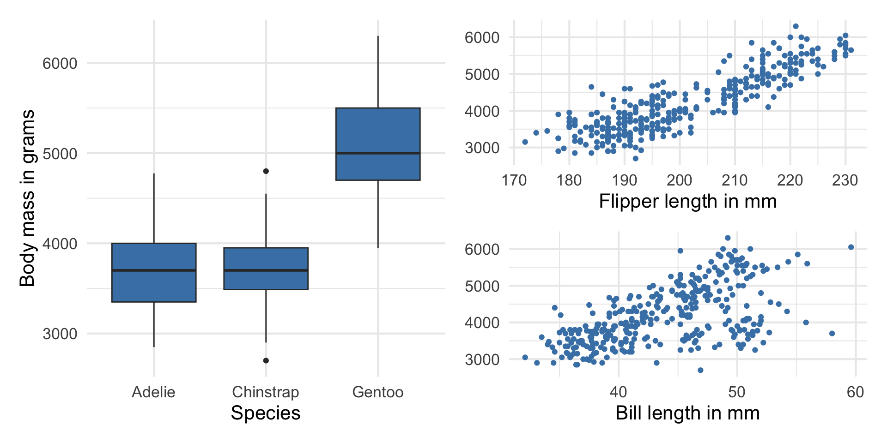
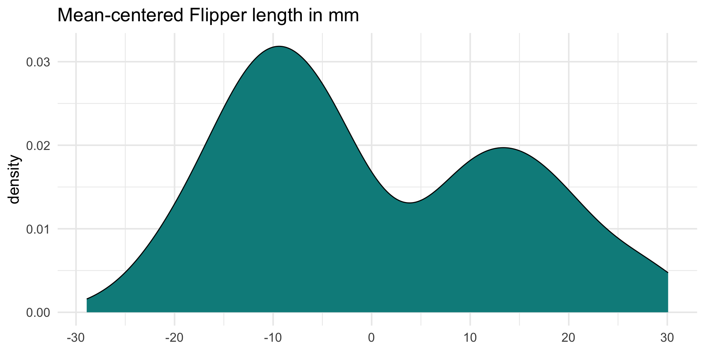
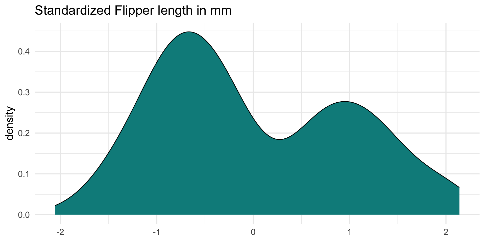
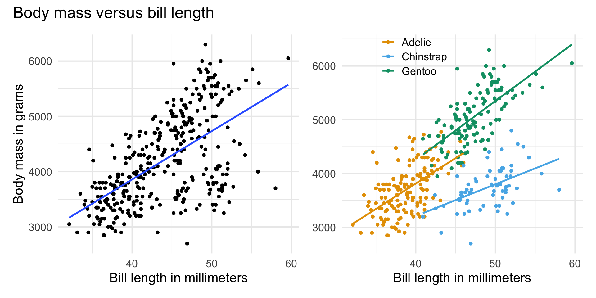

Multiple linear regression (MLR)
Jan 30, 2025
Announcements
- Lab 01 due TODAY at 11:59pm
- Team labs start on Monday
- Click here to learn more about the Academic Resource Center
- Statistics experience due Tuesday, April 15
Computational setup
Considering multiple variables
Data: Palmer penguins
The penguins data set contains data for penguins found on three islands in the Palmer Archipelago, Antarctica. Data were collected and made available by Dr. Kristen Gorman and the Palmer Station, Antarctica LTER, a member of the Long Term Ecological Research Network. These data can be found in the palmerpenguins R package.
# A tibble: 342 × 4
body_mass_g flipper_length_mm bill_length_mm species
<int> <int> <dbl> <fct>
1 3750 181 39.1 Adelie
2 3800 186 39.5 Adelie
3 3250 195 40.3 Adelie
4 3450 193 36.7 Adelie
5 3650 190 39.3 Adelie
6 3625 181 38.9 Adelie
7 4675 195 39.2 Adelie
8 3475 193 34.1 Adelie
9 4250 190 42 Adelie
10 3300 186 37.8 Adelie
# ℹ 332 more rowsVariables
Predictors:
bill_length_mm: Bill length in millimetersflipper_length_mm: Flipper length in millimetersspecies: Adelie, Gentoo, or Chinstrap species
Response: body_mass_g: Body mass in grams
The goal of this analysis is to use the bill length, flipper length, and species to predict body mass.
Response: body_mass_g

| min | median | max | iqr |
|---|---|---|---|
| 2700 | 4050 | 6300 | 1200 |
Predictors

Response vs. predictors
Why do we want to use a single model with all the predictors instead of 3 separate models?
Multiple linear regression
Multiple linear regression (MLR)
Based on the analysis goals, we will use a multiple linear regression model of the following form
\[ \begin{aligned}\widehat{\text{body_mass_g}} ~ = \hat{\beta}_0 & + \hat{\beta}_1 \times \text{flipper_length_mm} \\ & + \hat{\beta}_2 \times \text{species}_1 \\ &+\hat{\beta}_3 \times \text{species}_2 \\ &+ \hat{\beta}_4 \times \text{bill_length_mm} \end{aligned} \]
Similar to simple linear regression, this model assumes that at each combination of the predictor variables, the values body_mass_g follow a Normal distribution.
Multiple linear regression
Recall: The simple linear regression model assumes
\[ Y|X\sim N(\beta_0 + \beta_1 X, \sigma_{\epsilon}^2) \]
Similarly: The multiple linear regression model assumes
\[ Y|X_1, X_2, \ldots, X_p \sim N(\beta_0 + \beta_1 X_1 + \beta_2 X_2 + \dots + \beta_p X_p, \sigma_{\epsilon}^2) \]
Multiple linear regression
At any combination of the predictors, the mean value of the response \(Y\), is
\[ E(Y|X_1, \ldots, X_p) = \beta_0 + \beta_1 X_{1} + \beta_2 X_2 + \dots + \beta_p X_p \]
Using multiple linear regression, we can estimate the mean response for any combination of predictors
\[ \hat{Y} = \hat{\beta}_0 + \hat{\beta}_1 X_{1} + \hat{\beta}_2 X_2 + \dots + \hat{\beta}_p X_{p} \]
Model fit
penguin_fit <- lm(body_mass_g ~ flipper_length_mm + species +
bill_length_mm, data = penguins)
tidy(penguin_fit) |>
kable(digits = 3)| term | estimate | std.error | statistic | p.value |
|---|---|---|---|---|
| (Intercept) | -3904.387 | 529.257 | -7.377 | 0.000 |
| flipper_length_mm | 27.429 | 3.176 | 8.638 | 0.000 |
| speciesChinstrap | -748.562 | 81.534 | -9.181 | 0.000 |
| speciesGentoo | 90.435 | 88.647 | 1.020 | 0.308 |
| bill_length_mm | 61.736 | 7.126 | 8.664 | 0.000 |
Model equation
\[ \begin{align}\widehat{\text{body_mass_g}} = -3904.387 &+27.429 \times \text{flipper_length_mm}\\ & -748.562 \times \text{Chinstrap}\\ &+ 90.435 \times \text{Gentoo}\\ &+ 61.736 \times \text{bill_length_mm} \end{align} \]
Note
We will talk about why there are two terms in the model for species shortly!
Interpreting \(\hat{\beta}_j\)
- The estimated coefficient \(\hat{\beta}_j\) is the expected change in the mean of \(Y\) when \(X_j\) increases by one unit, holding the values of all other predictor variables constant.
- Example: The estimated coefficient for
flipper_length_mmis 27.429. This means for each additional millimeter in a penguin’s flipper length, its body mass is expected to be greater by 27.429 grams, on average, holding species and bill length constant.
Prediction
What is the predicted body mass for a Gentoo penguin with a flipper length of 200 millimeters and bill length of 45 millimeters?
The predicted body mass for a Gentoo penguin with a flipper length of 200 millimeters and bill length of 45 millimeters is 4449.968 grams.
Prediction, revisited
Just like with simple linear regression, we can use the predict() function in R to calculate the appropriate intervals for our predicted values:
new_penguin <- tibble(
flipper_length_mm = 200,
species = "Gentoo",
bill_length_mm = 45
)
predict(penguin_fit, new_penguin) 1
4449.955 Note
Difference in predicted value due to rounding the coefficients on the previous slide.
Confidence interval for \(\hat{\mu}_y\)
Calculate a 90% confidence interval for the estimated mean body mass a Gentoo penguins with a flipper length of 200 millimeters and bill length of 45 millimeters.
Prediction interval for \(\hat{y}\)
Calculate a 90% prediction interval for the estimated body mass for an individual Gentoo penguin with a flipper length of 200 millimeters and bill length of 45 millimeters.
Cautions
- Do not extrapolate! Because there are multiple predictor variables, there is the potential to extrapolate in many directions
- The multiple regression model only shows association, not causality
- To show causality, you must have a carefully designed experiment or carefully account for confounding variables in an observational study
Types of predictors
Categorical predictors
Indicator variables
Suppose there is a categorical variable with \(k\) categories (levels)
We can make \(k\) indicator variables - one indicator for each category
An indicator variable takes values 1 or 0
- 1 if the observation belongs to that category
- 0 if the observation does not belong to that category
Indicator variables for species
# A tibble: 3 × 4
species adelie chinstrap gentoo
<fct> <dbl> <dbl> <dbl>
1 Adelie 1 0 0
2 Gentoo 0 0 1
3 Chinstrap 0 1 0Indicators in the model
- We will use \(k-1\) of the indicator variables in the model.
- The baseline is the category that doesn’t have a term in the model. This is also called the reference level.
- The coefficients of the indicator variables in the model are interpreted as the expected change in the response compared to the baseline, holding all other variables constant.
- This approach is also called dummy coding.
Interpreting species
| term | estimate | std.error | statistic | p.value | conf.low | conf.high |
|---|---|---|---|---|---|---|
| (Intercept) | -3904.387 | 529.257 | -7.377 | 0.000 | -4945.450 | -2863.324 |
| flipper_length_mm | 27.429 | 3.176 | 8.638 | 0.000 | 21.182 | 33.675 |
| speciesChinstrap | -748.562 | 81.534 | -9.181 | 0.000 | -908.943 | -588.182 |
| speciesGentoo | 90.435 | 88.647 | 1.020 | 0.308 | -83.937 | 264.807 |
| bill_length_mm | 61.736 | 7.126 | 8.664 | 0.000 | 47.720 | 75.753 |
- The baseline category is
Adelie. - Penguins from the Chinstrap species are expected to have a body mass that is 748.562 grams less, on average, compared to penguins from the Adelie species, holding flipper length and bill length constant.
Interpret the coefficient of Gentoo in the context of the data.
Transforming quantitative predictors
Interpreting the intercept
| term | estimate | std.error | statistic | p.value | conf.low | conf.high |
|---|---|---|---|---|---|---|
| (Intercept) | -3904.387 | 529.257 | -7.377 | 0.000 | -4945.450 | -2863.324 |
| flipper_length_mm | 27.429 | 3.176 | 8.638 | 0.000 | 21.182 | 33.675 |
| speciesChinstrap | -748.562 | 81.534 | -9.181 | 0.000 | -908.943 | -588.182 |
| speciesGentoo | 90.435 | 88.647 | 1.020 | 0.308 | -83.937 | 264.807 |
| bill_length_mm | 61.736 | 7.126 | 8.664 | 0.000 | 47.720 | 75.753 |
The intercept -3904.387 is not meaningful. Let’s transform some variables to make this intercept meaningful.
Centering
- Centering a quantitative predictor means shifting every value by some constant \(C\)
\[ X_{cent} = X - C \]
One common type of centering is mean-centering, in which every value of a predictor is shifted by its mean
Only quantitative predictors are centered
Center all quantitative predictors in the model for ease of interpretation
What is one reason one might want to center the quantitative predictors? What is are the units of centered variables?
Centering
Use the scale() function with center = TRUE and scale = FALSE to mean-center variables
Original vs. mean-centered variable
Original variable

| Mean | SD |
|---|---|
| 200.915 | 14.062 |
Mean-centered variable

| Mean | SD |
|---|---|
| 0 | 14.062 |
Using mean-centered variables in the model
How do you expect the model to change if we use flipper_length_cent and bill_length_cent in the model?
| term | estimate | std.error | statistic | p.value | conf.low | conf.high |
|---|---|---|---|---|---|---|
| (Intercept) | 4318.066 | 45.674 | 94.542 | 0.000 | 4228.225 | 4407.908 |
| flipper_length_cent | 27.429 | 3.176 | 8.638 | 0.000 | 21.182 | 33.675 |
| speciesChinstrap | -748.562 | 81.534 | -9.181 | 0.000 | -908.943 | -588.182 |
| speciesGentoo | 90.435 | 88.647 | 1.020 | 0.308 | -83.937 | 264.807 |
| bill_length_cent | 61.736 | 7.126 | 8.664 | 0.000 | 47.720 | 75.753 |
Original vs. mean-centered model
| term | estimate |
|---|---|
| (Intercept) | -3904.387 |
| flipper_length_mm | 27.429 |
| speciesChinstrap | -748.562 |
| speciesGentoo | 90.435 |
| bill_length_mm | 61.736 |
| term | estimate |
|---|---|
| (Intercept) | 4318.066 |
| flipper_length_cent | 27.429 |
| speciesChinstrap | -748.562 |
| speciesGentoo | 90.435 |
| bill_length_cent | 61.736 |
What has changed? What is the same?
Standardizing
- Standardizing a quantitative predictor mean shifting every value by the mean and dividing by the standard deviation of that variable
\[ X_{std} = \frac{X - \bar{X}}{S_X} \]
Only quantitative predictors are standardized
Standardize all quantitative predictors in the model for ease of interpretation
What is one reason one might want to standardize the quantitative predictors? What is are the units of standardized variables?
Standardizing
Use the scale() function with center = TRUE and scale = TRUE to standardized variables
Original vs. standardized variable
Original variable

| Mean | SD |
|---|---|
| 200.915 | 14.062 |
Standardized variable

| Mean | SD |
|---|---|
| 0 | 1 |
Using standardized variables in the model
How do you expect the model to change if we use flipper_length_std and bill_length_std in the model?
| term | estimate | std.error | statistic | p.value | conf.low | conf.high |
|---|---|---|---|---|---|---|
| (Intercept) | 4318.066 | 45.674 | 94.542 | 0.000 | 4228.225 | 4407.908 |
| flipper_length_std | 385.696 | 44.654 | 8.638 | 0.000 | 297.862 | 473.531 |
| speciesChinstrap | -748.562 | 81.534 | -9.181 | 0.000 | -908.943 | -588.182 |
| speciesGentoo | 90.435 | 88.647 | 1.020 | 0.308 | -83.937 | 264.807 |
| bill_length_std | 337.055 | 38.902 | 8.664 | 0.000 | 260.533 | 413.577 |
Original vs. standardized model
| term | estimate |
|---|---|
| (Intercept) | -3904.387 |
| flipper_length_mm | 27.429 |
| speciesChinstrap | -748.562 |
| speciesGentoo | 90.435 |
| bill_length_mm | 61.736 |
| term | estimate |
|---|---|
| (Intercept) | 4318.066 |
| flipper_length_std | 385.696 |
| speciesChinstrap | -748.562 |
| speciesGentoo | 90.435 |
| bill_length_std | 337.055 |
What has changed? What is the same?
Interaction terms
Interaction terms
- Sometimes the relationship between a predictor variable and the response depends on the value of another predictor variable.
- This is an interaction effect.
- To account for this, we can include interaction terms in the model.
Bill length versus species
If the lines are not parallel, there is indication of a potential interaction effect, i.e., the slope of bill length may differ based on the species.
Interaction term in model
| term | estimate | std.error | statistic | p.value |
|---|---|---|---|---|
| (Intercept) | -4297.905 | 645.054 | -6.663 | 0.000 |
| flipper_length_mm | 27.263 | 3.175 | 8.586 | 0.000 |
| speciesChinstrap | 1146.287 | 726.217 | 1.578 | 0.115 |
| speciesGentoo | 54.716 | 619.934 | 0.088 | 0.930 |
| bill_length_mm | 72.692 | 10.642 | 6.831 | 0.000 |
| speciesChinstrap:bill_length_mm | -41.035 | 16.104 | -2.548 | 0.011 |
| speciesGentoo:bill_length_mm | -1.163 | 14.436 | -0.081 | 0.936 |
Interpreting interaction terms
- What the interaction means: The effect of bill length on the body mass is 41.035 less when the penguin is from the Chinstrap species compared to the effect for the Adelie species, holding all else constant.
- Interpreting
bill_length_mmfor Chinstrap: For each additional millimeter in bill length, we expect the body mass of Chinstrap penguins to increase by 31.657 grams (72.692 - 41.035), holding all else constant.
Summary
In general, how do
indicators for categorical predictors impact the model equation?
interaction terms impact the model equation?
Recap
Introduced multiple linear regression
Interpreted coefficients in the multiple linear regression model
Calculated predictions and associated intervals for multiple linear regression models
Mean-centered and standardized quantitative predictors
Used indicator variables for categorical predictors
Used interaction terms